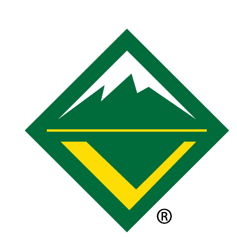

Health colors
- Green
- Healthy, complete, or strong.
- Yellow
- Watch, partial completion, or approaching renewal.
- Red
- Attention is needed, a gap exists, or renewal is past.
- Gray
- Later, informational, or unavailable.

Venturing®
Sources, measures, and color meanings
Reference
The dashboard uses the newest local Venturing workbook capture. Filters apply to every score, health-board row, and diagnostic chart on the page.
Progress is the share of six positive workbook signals: size, growth, youth leadership, outdoor activity, complete unit-leader and committee-chair training, and a Unit Metric score of at least 3. Missing signals are shown as unavailable and are excluded from the percentage.
The Crews sheet supplies CST, council, district, crew number, renewal date, membership counts, year-over-year primary youth, and renewal workflow. The UnitMetric sheet supplies Unit Metric and its health, training, leadership, outdoor, and retention signals. Records join on Unit ID.
The published snapshot intentionally excludes contact names, email addresses, phone numbers, meeting addresses, websites, and charter-organization fields. Missing measurements remain unavailable and are excluded from rates and averages instead of being converted to zero.
The interface follows the 2024 Scouting America brand guidelines: Venturing Green is the primary color, Venturing Yellow is the accent, white and Scouting America grays support the palette, and the official Venturing trademark remains unaltered on a white field.